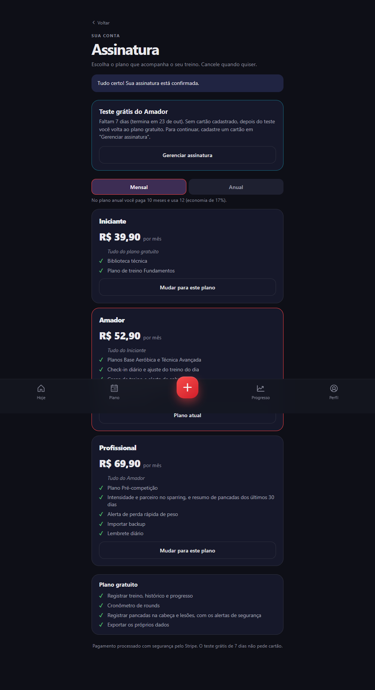
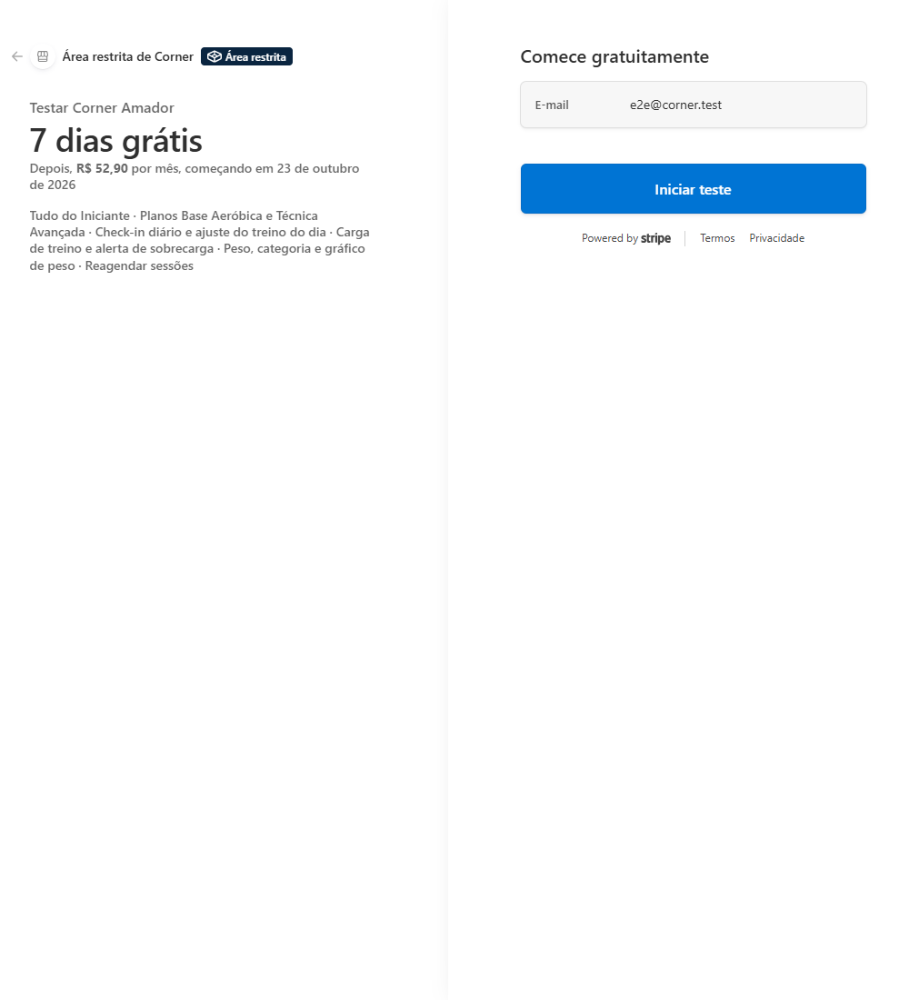
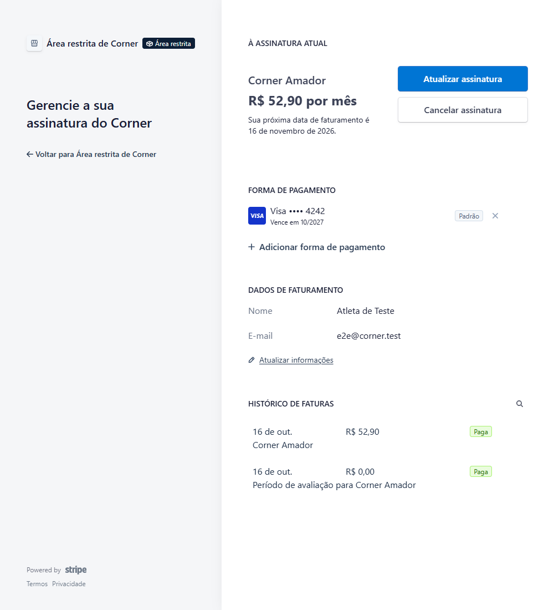

<!doctype html>
<html lang="pt-BR">
<head>
<meta charset="utf-8">
<title>Corner — Relatório de andamento e meio de pagamento</title>
<link rel="stylesheet" href="https://unpkg.com/@phosphor-icons/web@2.1.1/src/fill/style.css">
<link rel="stylesheet" href="https://unpkg.com/@phosphor-icons/web@2.1.1/src/regular/style.css">
<style>
  @page { size: 210mm 297mm; margin: 0; }
  :root {
    --bg: #0e0f17; --surface: #16182a; --surface2: #1e2030; --line: #2c2e3d; --line2: #3f4150;
    --text: #e9e9ed; --muted: #a3a5b5; --dim: #7a7c8c;
    --red: oklch(0.63 0.21 25); --blue: oklch(0.62 0.17 258); --green: #75d69a; --amber: oklch(0.8 0.14 85);
  }
  * { box-sizing: border-box; margin: 0; padding: 0; }
  html, body { background: var(--bg); color: var(--text); font-family: 'Inter', -apple-system, 'Segoe UI', system-ui, sans-serif; -webkit-print-color-adjust: exact; print-color-adjust: exact; }
  .pg { position: relative; width: 210mm; height: 297mm; overflow: hidden; break-after: page; background: var(--bg); }
  .pg:last-child { break-after: auto; }
  .pg::before { content: ""; position: absolute; inset: 0; background: radial-gradient(70% 40% at 0% 0%, oklch(0.62 0.17 258 / 0.12), transparent 70%), radial-gradient(60% 35% at 100% 100%, oklch(0.63 0.21 25 / 0.11), transparent 70%); }

  .logo { position: relative; flex: none; overflow: hidden; background: linear-gradient(160deg, #232532, #161826); box-shadow: inset 0 0 0 1px oklch(1 0 0 / 0.07), 0 10px 30px rgba(0,0,0,.45); }
  .logo-in { position: absolute; left: 0; top: 0; width: 148px; height: 148px; transform-origin: 0 0; }
  .logo-in svg { position: absolute; inset: 0; width: 100%; height: 100%; }
  .logo-in i { position: absolute; left: 67px; top: 65px; font-size: 64px; color: var(--red); transform: rotate(-35deg); filter: drop-shadow(0 6px 10px rgba(0,0,0,.45)); }

  /* Capa */
  .capa svg.cordas { position: absolute; inset: 0; width: 100%; height: 100%; }
  .capa .bloco { position: absolute; left: 262px; top: 290px; right: 60px; }
  .capa h1 { margin-top: 30px; font-size: 104px; font-weight: 800; letter-spacing: -0.045em; line-height: 1; background: linear-gradient(100deg, #f4f2f2 25%, oklch(0.82 0.1 25) 60%, oklch(0.8 0.1 258)); -webkit-background-clip: text; background-clip: text; color: transparent; }
  .capa .tipo { margin-top: 20px; font-size: 27px; font-weight: 700; letter-spacing: -0.02em; line-height: 1.2; }
  .capa .tag { margin-top: 12px; font-size: 14.5px; line-height: 1.55; color: var(--muted); max-width: 400px; }
  .capa .metas { margin-top: 26px; display: grid; gap: 8px; font-size: 12.5px; color: var(--muted); }
  .capa .metas span { display: flex; align-items: center; gap: 9px; } .capa .metas i { font-size: 16px; }
  .capa .nums { position: absolute; left: 262px; right: 60px; bottom: 70px; display: grid; grid-template-columns: repeat(3, 1fr); gap: 12px; }
  .capa .nums div { padding: 13px 14px; border-radius: 14px; background: oklch(0.2 0.02 275 / .7); border: 1px solid var(--line); }
  .capa .nums b { display: block; font-size: 26px; font-weight: 800; letter-spacing: -0.03em; }
  .capa .nums span { font-size: 11px; color: var(--muted); }
  .capa .rodape { position: absolute; left: 262px; right: 60px; bottom: 30px; font-size: 11px; color: var(--dim); }

  /* Páginas */
  .cab { position: absolute; left: 48px; right: 48px; top: 28px; display: flex; align-items: center; gap: 12px; }
  .cab .t { font-size: 11px; font-weight: 700; letter-spacing: .12em; text-transform: uppercase; color: var(--dim); }
  .cab .s { margin-left: auto; font-size: 11px; color: var(--dim); }
  .filete { position: absolute; left: 48px; right: 48px; top: 74px; height: 2px; border-radius: 2px; background: linear-gradient(90deg, var(--red), var(--blue)); opacity: .75; }
  .rod { position: absolute; left: 48px; right: 48px; bottom: 22px; display: flex; justify-content: space-between; font-size: 10.5px; color: var(--dim); }
  .corpo { position: absolute; left: 48px; right: 48px; top: 96px; bottom: 56px; display: flex; flex-direction: column; gap: 14px; overflow: hidden; }

  h2 { font-size: 26px; font-weight: 800; letter-spacing: -0.03em; line-height: 1.1; }
  h2 small { display: block; margin-bottom: 6px; font-size: 11px; font-weight: 700; letter-spacing: .14em; text-transform: uppercase; color: var(--red); }
  h3 { font-size: 14px; font-weight: 700; letter-spacing: -0.01em; }
  p.lead { font-size: 13px; line-height: 1.6; color: var(--muted); }
  p, li { font-size: 12px; line-height: 1.5; color: #d3d4dc; }
  b { font-weight: 700; color: var(--text); }
  .m { color: var(--muted); }

  .kpis { display: grid; grid-template-columns: repeat(4, 1fr); gap: 10px; }
  .kpi { padding: 14px; border-radius: 14px; background: var(--surface); border: 1px solid var(--line2); border-top: 3px solid var(--red); }
  .kpi.b { border-top-color: var(--blue); } .kpi.g { border-top-color: var(--green); } .kpi.a { border-top-color: var(--amber); }
  .kpi b { display: block; font-size: 30px; font-weight: 800; letter-spacing: -0.04em; line-height: 1; }
  .kpi span { display: block; margin-top: 6px; font-size: 11px; line-height: 1.35; color: var(--muted); }

  .card { padding: 13px 15px; border-radius: 14px; background: var(--surface); border: 1px solid var(--line2); }
  .card.r { border-left: 4px solid var(--red); } .card.b { border-left: 4px solid var(--blue); } .card.a { border-left: 4px solid var(--amber); } .card.g { border-left: 4px solid var(--green); }
  .card h3 { margin-bottom: 5px; display: flex; align-items: center; gap: 7px; } .card h3 i { font-size: 16px; }
  .card ul { list-style: none; display: grid; gap: 4px; } .card li { position: relative; padding-left: 13px; }
  .card li::before { content: ""; position: absolute; left: 0; top: 6px; width: 5px; height: 5px; border-radius: 50%; background: var(--dim); }
  .card.r li::before { background: var(--red); } .card.b li::before { background: var(--blue); } .card.a li::before { background: var(--amber); } .card.g li::before { background: var(--green); }
  .grid2 { display: grid; grid-template-columns: 1fr 1fr; gap: 10px; } .grid3 { display: grid; grid-template-columns: repeat(3, 1fr); gap: 10px; }

  table { width: 100%; border-collapse: separate; border-spacing: 0; border: 1px solid var(--line2); border-radius: 12px; overflow: hidden; background: var(--surface); }
  th { padding: 8px 10px; text-align: left; font-size: 10px; font-weight: 700; letter-spacing: .09em; text-transform: uppercase; color: var(--muted); background: var(--surface2); }
  td { padding: 8px 10px; vertical-align: top; font-size: 11.2px; line-height: 1.42; color: #d3d4dc; border-top: 1px solid var(--line); }
  td b { color: var(--text); } td small { color: var(--muted); font-size: 10.3px; }
  td code, .tree, code { font-family: 'Cascadia Mono', Consolas, 'Courier New', monospace; font-size: 10.3px; color: #c8d6ff; }
  td.c, th.c { text-align: center; } td.c { color: var(--green); font-weight: 800; font-size: 13px; }
  td.p { font-size: 15px; font-weight: 800; letter-spacing: -0.02em; color: var(--text); white-space: nowrap; }
  tr.destaque td { background: oklch(0.63 0.21 25 / 0.07); }

  .chip { display: inline-flex; align-items: center; gap: 4px; padding: 2px 8px; border-radius: 99px; font-size: 10px; font-weight: 700; white-space: nowrap; border: 1px solid; }
  .chip.alta { color: oklch(0.8 0.13 25); border-color: oklch(0.63 0.21 25 / .6); background: oklch(0.63 0.21 25 / .14); }
  .chip.media { color: var(--amber); border-color: oklch(0.8 0.14 85 / .55); background: oklch(0.8 0.14 85 / .12); }
  .chip.baixa { color: oklch(0.8 0.1 258); border-color: oklch(0.62 0.17 258 / .6); background: oklch(0.62 0.17 258 / .14); }
  .chip.ok { color: var(--green); border-color: rgba(117,214,154,.5); background: rgba(117,214,154,.1); }
  .chip.no { color: oklch(0.8 0.13 25); border-color: oklch(0.63 0.21 25 / .6); background: oklch(0.63 0.21 25 / .12); }
  .chip.wip { color: var(--amber); border-color: oklch(0.8 0.14 85 / .55); background: oklch(0.8 0.14 85 / .12); }
  .chip.novo { color: #fff; border-color: transparent; background: linear-gradient(90deg, var(--red), var(--blue)); }

  .tl { position: relative; display: grid; gap: 9px; padding-left: 26px; }
  .tl::before { content: ""; position: absolute; left: 8px; top: 8px; bottom: 8px; width: 2px; background: linear-gradient(var(--red), var(--blue)); border-radius: 2px; }
  .tl .it { position: relative; padding: 11px 14px; border-radius: 13px; background: var(--surface); border: 1px solid var(--line2); }
  .tl .it::before { content: ""; position: absolute; left: -24px; top: 15px; width: 12px; height: 12px; border-radius: 50%; background: var(--bg); border: 3px solid var(--red); }
  .tl .it:nth-child(even)::before { border-color: var(--blue); }
  .tl .it.pg-novo { border-color: oklch(0.63 0.21 25 / .6); background: oklch(0.63 0.21 25 / 0.08); }
  .tl .it h3 { display: flex; gap: 8px; align-items: baseline; } .tl .it h3 span { font-size: 10.5px; font-weight: 700; color: var(--red); letter-spacing: .05em; white-space: nowrap; }
  .tl .it h3 span.chip { color: #fff; letter-spacing: 0; font-size: 10px; }
  .tl .it p { margin-top: 3px; }

  .tree { padding: 12px 14px; border-radius: 12px; background: #0b0c13; border: 1px solid var(--line2); line-height: 1.55; white-space: pre; }
  .tree em { font-style: normal; color: var(--muted); } .tree strong { color: var(--green); font-weight: 700; }
  .nota { font-size: 10.8px; color: var(--muted); font-style: italic; line-height: 1.5; }
  .camadas { display: grid; gap: 6px; }
  .camadas div { display: grid; grid-template-columns: 96px 1fr; gap: 10px; align-items: center; padding: 8px 12px; border-radius: 10px; background: var(--surface); border: 1px solid var(--line2); font-size: 11.2px; }
  .camadas b { font-size: 11.5px; } .camadas .c1 { border-left: 4px solid var(--red); } .camadas .c2 { border-left: 4px solid oklch(0.7 0.15 25); } .camadas .c3 { border-left: 4px solid var(--amber); } .camadas .c4 { border-left: 4px solid oklch(0.68 0.14 200); } .camadas .c5 { border-left: 4px solid var(--blue); }
  .z { display: flex; flex-direction: column; gap: 14px; }
  .cols3 { display: grid; grid-template-columns: repeat(3, 1fr); gap: 10px; } .cols3 .card h3 { color: var(--text); }

  /* Fluxo em passos */
  .passos { display: grid; gap: 8px; counter-reset: passo; }
  .passos div { position: relative; padding: 9px 12px 9px 46px; border-radius: 12px; background: var(--surface); border: 1px solid var(--line2); counter-increment: passo; }
  .passos div::before { content: counter(passo); position: absolute; left: 12px; top: 9px; width: 24px; height: 24px; border-radius: 50%; display: grid; place-items: center; font-size: 12px; font-weight: 800; color: #fff; background: linear-gradient(135deg, var(--red), var(--blue)); }
  .passos b { display: block; font-size: 12.2px; } .passos span { font-size: 11.2px; color: var(--muted); line-height: 1.4; }

  /* Capturas de tela */
  .fig { display: grid; gap: 6px; align-content: start; }
  .shot { position: relative; overflow: hidden; border-radius: 12px; border: 1px solid var(--line2); background: #000; }
  .shot img { position: absolute; left: 0; top: 0; width: 100%; height: 100%; object-fit: cover; object-position: top; }
  .fig figcaption { font-size: 10.8px; line-height: 1.4; color: var(--muted); } .fig figcaption b { color: var(--text); }
</style>
</head>
<body>
<div id="doc"></div>
<script>
const TOTAL = 13
const doc = document.getElementById('doc')
const data = '16 de outubro de 2026'
const logo = s => `<div class="logo" style="width:${s}px;height:${s}px;border-radius:${s * 0.243}px"><div class="logo-in" style="transform:scale(${s / 148})">
  <svg viewBox="0 0 120 120"><path d="M120 24 H24 V120" fill="none" stroke="oklch(0.63 0.21 25)" stroke-width="5" stroke-linecap="round"/><path d="M120 36 H36 V120" fill="none" stroke="#e9e9ed" stroke-opacity="0.85" stroke-width="5" stroke-linecap="round"/><path d="M120 48 H48 V120" fill="none" stroke="oklch(0.62 0.17 258)" stroke-width="5" stroke-linecap="round"/><circle cx="24" cy="24" r="11" fill="oklch(0.63 0.21 25)"/><circle cx="24" cy="24" r="4" fill="#161826"/></svg>
  <i class="ph-fill ph-boxing-glove"></i></div></div>`
const pagina = (n, secao, html) => doc.insertAdjacentHTML('beforeend', `<section class="pg">
  <div class="cab">${logo(34)}<span class="t">Corner · Relatório</span><span class="s">${secao}</span></div><div class="filete"></div>
  <div class="corpo">${html}</div>
  <div class="rod"><span>Corner · Relatório de andamento e meio de pagamento</span><span>${n} / ${TOTAL}</span></div></section>`)
const chip = (t, c) => `<span class="chip ${c}">${t}</span>`
const ok = '<td class="c">✓</td>', vazio = '<td class="c"></td>'

/* ── 1 · Capa ─────────────────────────────────────────────── */
doc.insertAdjacentHTML('beforeend', `<section class="pg capa">
  <svg class="cordas" viewBox="0 0 794 1123" preserveAspectRatio="none"><g fill="none" stroke-width="5" stroke-linecap="round"><path d="M794 112 H112 V1123" stroke="oklch(0.63 0.21 25)"/><path d="M794 160 H160 V1123" stroke="#e9e9ed" stroke-opacity=".85"/><path d="M794 208 H208 V1123" stroke="oklch(0.62 0.17 258)"/></g><circle cx="112" cy="112" r="36" fill="oklch(0.63 0.21 25)"/><circle cx="112" cy="112" r="13" fill="#161826"/></svg>
  <div class="bloco">
    ${logo(132)}
    <h1>Corner</h1>
    <div class="tipo">Relatório de andamento<br>e meio de pagamento</div>
    <p class="tag">O que foi concluído do plano de melhorias, o que foi incluído (com destaque para a assinatura paga pelo Stripe), como está o código hoje e o que falta fazer.</p>
    <div class="metas">
      <span><i class="ph-fill ph-calendar-check" style="color:var(--red)"></i>Período: 07 a 16 de outubro de 2026 (continua o relatório de 06/10)</span>
      <span><i class="ph-fill ph-git-branch" style="color:var(--blue)"></i>Base: commit 0ef882a na main · verificação automática (CI) verde</span>
      <span><i class="ph-fill ph-globe" style="color:var(--green)"></i>corner2.vercel.app · github.com/renan-ml22/Corner2</span>
    </div>
  </div>
  <div class="nums"><div><b>1.590</b><span>testes automáticos guardados no repositório (eram 0)</span></div><div><b>3+1</b><span>planos: Iniciante, Amador, Profissional e Gratuito</span></div><div><b>7 de 8</b><span>fases do plano de melhorias concluídas</span></div></div>
  <div class="rodape">Documento gerado em ${data}</div>
</section>`)

/* ── 2 · Resumo executivo ─────────────────────────────────── */
pagina(2, '01 · Resumo', `
  <h2><small>Visão geral</small>Resumo executivo</h2>
  <p class="lead">Desde o relatório de 06/10, o Corner ganhou uma rede de testes, verificação automática no GitHub, uma camada de dados preparada para o banco e código reorganizado. A inclusão mais visível desta etapa é o <b>meio de pagamento por assinatura</b>, feito com o Stripe e funcionando em modo de teste.</p>
  <div class="kpis">
    <div class="kpi"><b>7/8</b><span>fases do plano de melhorias concluídas; falta o teste em celular real</span></div>
    <div class="kpi b"><b>1.590</b><span>testes: 1.430 de unidade e 160 de navegador (antes: nenhum salvo)</span></div>
    <div class="kpi g"><b>0</b><span>vulnerabilidades em produção (antes: 3, uma crítica)</span></div>
    <div class="kpi a"><b>4</b><span>níveis de acesso: Gratuito, Iniciante, Amador e Profissional</span></div>
  </div>
  <table>
    <tr><th style="width:30%">Onde está</th><th>O que contém</th><th style="width:16%">Situação</th></tr>
    <tr><td><b>GitHub e Vercel</b><br><small>commit 0ef882a, main protegida</small></td><td>Todo o plano de melhorias e todo o código do pagamento. Só entra na main o que passa na verificação automática.</td><td>${chip('Enviado', 'ok')}</td></tr>
    <tr class="destaque"><td><b>Pagamento no site publicado</b><br><small>corner2.vercel.app</small></td><td>A tela Assinatura e as rotas estão no ar, mas <b>desligadas</b>: pelo combinado, o site não recebeu as chaves do Stripe, então funciona como antes (tudo liberado) e a tela mostra “Pagamento ainda não disponível”.</td><td>${chip('Desligado', 'wip')}</td></tr>
    <tr class="destaque"><td><b>Pagamento na sua máquina</b><br><small>npm run dev</small></td><td>Funciona de ponta a ponta com o Stripe de teste: escolher plano, teste grátis, página de pagamento, volta ao app, portal e troca de plano.</td><td>${chip('Testado', 'ok')}</td></tr>
    <tr><td><b>Ainda não existe</b></td><td>Conta com banco de dados, aviso automático do Stripe (webhook), cobrança com dinheiro real, termos de uso, nota fiscal.</td><td>${chip('Planejado', 'baixa')}</td></tr>
  </table>
  <div class="grid2">
    <div class="card g"><h3><i class="ph-fill ph-check-circle" style="color:var(--green)"></i>O que está sólido</h3><ul><li>Verificação automática em todo envio, com a main protegida</li><li>Cobrança protegida no servidor; chaves nunca no repositório</li><li>Pagamento conferido contra o Stripe de teste de verdade</li><li>Alertas de segurança liberados em todos os planos</li></ul></div>
    <div class="card a"><h3><i class="ph-fill ph-warning" style="color:var(--amber)"></i>O que merece atenção</h3><ul><li>No site publicado o pagamento ainda não aparece</li><li>O bloqueio por plano vale só na tela (sem banco de dados)</li><li>Teste em celular real ainda não foi feito</li><li>Dados continuam só no aparelho do usuário</li></ul></div>
  </div>
`)

/* ── 3 · Linha do tempo ───────────────────────────────────── */
pagina(3, '02 · Cronologia', `
  <h2><small>O que aconteceu, em ordem</small>Linha do tempo desde o último relatório</h2>
  <div class="tl">
    <div class="it"><h3><span>06/10</span>Ponto de partida</h3><p>Relatório anterior: nenhum teste salvo, 3 vulnerabilidades, 44 arquivos pendentes e a segunda fase ainda fora do ar.</p></div>
    <div class="it"><h3><span>13/10</span>Publicação e rede de segurança (fases 0 e 1)</h3><p>Segunda fase publicada em commits por assunto. Testes de unidade nas regras de cálculo; os erros encontrados viraram teste e foram corrigidos.</p></div>
    <div class="it"><h3><span>13/10</span>Dependências e verificação automática (fases 2 e 3)</h3><p>Next atualizado para 16.3.8, sem vulnerabilidades em produção. GitHub Actions passa a rodar tipos, lint, testes, build e auditoria, e a main só aceita o que passou.</p></div>
    <div class="it"><h3><span>13/10</span>Camada de dados única (fase 4)</h3><p>Contrato de dados, repositório, versão do esquema e backup validado. As telas deixam de conhecer o armazenamento, o que prepara a troca por um banco.</p></div>
    <div class="it"><h3><span>14/10</span>Navegador, reorganização e acessibilidade (fases 5 e 7)</h3><p>Testes de navegador no CI. CornerProvider, painéis e CSS divididos em partes pequenas. Contraste, teclado e leitor de tela revisados; textos num só lugar. Senha de teste trocada.</p></div>
    <div class="it pg-novo"><h3><span>15–16/10</span>Meio de pagamento por assinatura ${chip('Novo', 'novo')}</h3><p>Decisões tomadas com você (por recursos, mensal e anual, 7 dias grátis sem cartão, plano gratuito limitado). Catálogo e regras, produtos e preços no Stripe, rotas do servidor, tela Assinatura e bloqueio de recursos por plano.</p></div>
    <div class="it pg-novo"><h3><span>16/10</span>Pagamento publicado na main</h3><p>Verificação automática verde. Conferido contra o Stripe de teste de verdade, com limpeza dos dados de teste ao final. O site publicado segue com o pagamento desligado, de propósito.</p></div>
  </div>
`)

/* ── 4 · Andamento do plano ──────────────────────────────── */
pagina(4, '03 · Andamento', `
  <h2><small>Plano de melhorias</small>Andamento fase a fase</h2>
  <table>
    <tr><th style="width:27%">Fase</th><th>O que foi entregue</th><th style="width:15%">Situação</th></tr>
    <tr><td><b>0</b> · Auditar e publicar</td><td>Segunda fase enviada em commits por assunto, com auditoria antes do envio.</td><td>${chip('Concluída', 'ok')}</td></tr>
    <tr><td><b>1</b> · Testes de unidade</td><td>29 arquivos e 1.430 testes: regras de carga, saúde, datas, treinos, login, dados e assinatura.</td><td>${chip('Concluída', 'ok')}</td></tr>
    <tr><td><b>2</b> · Dependências</td><td>Next 16.3.8 e sharp atualizados. Zero vulnerabilidades em produção; 5 avisos só na ferramenta de lint, sem correção disponível, documentados.</td><td>${chip('Concluída', 'ok')}</td></tr>
    <tr><td><b>3</b> · CI e auditoria</td><td>GitHub Actions com tipos, lint, testes, build, navegador e auditoria. Verificador de variáveis de ambiente. Main protegida.</td><td>${chip('Concluída', 'ok')}</td></tr>
    <tr><td><b>4</b> · Camada de dados</td><td>Contrato único, repositório, versão do esquema, backup validado e quarentena de dado corrompido.</td><td>${chip('Concluída', 'ok')}</td></tr>
    <tr><td><b>5</b> · Dividir provider, painéis e CSS</td><td>CornerProvider em hooks por assunto, um arquivo por painel e estilos em módulos.</td><td>${chip('Concluída', 'ok')}</td></tr>
    <tr><td><b>6</b> · Teste em celular real</td><td>Roteiro pronto em <code>docs/teste-celular.md</code>. Só você consegue fazer: som, instalação, vibração, tela acesa e leitor de tela.</td><td>${chip('Depende de você', 'wip')}</td></tr>
    <tr><td><b>7</b> · Acessibilidade e textos</td><td>Contraste WCAG AA, teclado, auditoria automática (axe), títulos de página e textos em <code>lib/textos.ts</code>.</td><td>${chip('Concluída', 'ok')}</td></tr>
    <tr class="destaque"><td><b>Extra</b> · Meio de pagamento</td><td>Assinatura com Stripe, três planos pagos e plano gratuito. Fora do plano original, incluída a seu pedido (detalhes nas próximas páginas).</td><td>${chip('Em teste', 'ok')}</td></tr>
    <tr><td><b>Banco de dados</b></td><td>Adiado por decisão: o provedor (Supabase ou Neon) ainda não foi escolhido.</td><td>${chip('Adiado', 'baixa')}</td></tr>
  </table>
  <div class="grid3">
    <div class="card r"><h3>CornerProvider</h3><p><b>329 → 31</b> linhas. O estado foi para hooks por assunto.</p></div>
    <div class="card b"><h3>AppSheets</h3><p><b>324 → 24</b> linhas. Cada painel tem seu arquivo e seu CSS.</p></div>
    <div class="card g"><h3>globals.css</h3><p><b>1.026 → 8</b> linhas. O resto foi para módulos e 4 arquivos de estilo.</p></div>
  </div>
`)

/* ── 5 · Pagamento: visão geral ──────────────────────────── */
pagina(5, '04 · Meio de pagamento', `
  <h2><small>Inclusão principal desta etapa</small>Meio de pagamento por assinatura</h2>
  <p class="lead">O Corner passou a poder cobrar por assinatura usando o <b>Stripe</b>: três planos pagos, cada um mensal ou anual, e um plano gratuito para quem ainda não assinou. Tudo funciona em <b>modo de teste</b>: nenhum dinheiro real é movimentado.</p>
  <table>
    <tr><th style="width:24%">Plano</th><th style="width:20%">Mensal</th><th style="width:26%">Anual <small>(paga 10 meses, usa 12)</small></th><th>Para quem</th></tr>
    <tr><td><b>Gratuito</b></td><td class="p">R$ 0</td><td class="p">R$ 0</td><td>Quem nunca assinou ou cancelou. Registra treino, usa o cronômetro e tem os alertas de segurança.</td></tr>
    <tr><td><b>Iniciante</b></td><td class="p">R$ 39,90</td><td class="p">R$ 399,00</td><td>Quem está começando: biblioteca técnica e plano Fundamentos.</td></tr>
    <tr><td><b>Amador</b></td><td class="p">R$ 52,90</td><td class="p">R$ 529,00</td><td>Quem treina com regularidade: check-in, carga, saúde e mais planos.</td></tr>
    <tr><td><b>Profissional</b></td><td class="p">R$ 69,90</td><td class="p">R$ 699,00</td><td>Quem compete: plano pré-competição, sparring detalhado, importar backup e lembrete.</td></tr>
  </table>
  <div class="cols3">
    <div class="card r"><h3><i class="ph-fill ph-gift" style="color:var(--red)"></i>Teste grátis</h3><p><b>7 dias sem cartão</b>, só na primeira assinatura. Sem cartão cadastrado até o fim, a assinatura é cancelada e a pessoa volta ao plano gratuito. Trocar de plano no teste não encerra o teste.</p></div>
    <div class="card b"><h3><i class="ph-fill ph-credit-card" style="color:var(--blue)"></i>Cobrança</h3><p>O cartão é digitado <b>só na página do Stripe</b>. O Corner nunca vê nem guarda número de cartão.</p></div>
    <div class="card g"><h3><i class="ph-fill ph-gear" style="color:var(--green)"></i>Gestão</h3><p>No Portal do Cliente do Stripe a pessoa troca de plano, atualiza o cartão, vê as faturas e cancela. O cancelamento vale até o fim do período pago.</p></div>
  </div>
  <div class="card a"><h3><i class="ph-fill ph-wallet" style="color:var(--amber)"></i>Quais meios de pagamento aparecem</h3><p>Hoje, <b>cartão</b> (padrão do Stripe). O Corner não fixa os meios no código: valem os que estiverem ativados no painel do Stripe. <b>Pix e boleto não estão configurados</b>, e têm restrições para cobrança recorrente que precisam ser conferidas antes de ligar.</p></div>
`)

/* ── 6 · O que cada plano libera ─────────────────────────── */
pagina(6, '04 · Meio de pagamento', `
  <h2><small>Liberação por recursos do app</small>O que cada plano libera</h2>
  <p class="lead">Cada plano inclui tudo o que o anterior tem. A tabela fica num só arquivo (<code>lib/assinatura/catalogo.ts</code>): mudar um recurso de plano é mudar uma linha.</p>
  <table>
    <tr><th style="width:46%">Recurso</th><th class="c">Gratuito</th><th class="c">Iniciante</th><th class="c">Amador</th><th class="c">Profissional</th></tr>
    <tr><td>Registrar treino, histórico e progresso</td>${ok}${ok}${ok}${ok}</tr>
    <tr><td>Cronômetro de rounds</td>${ok}${ok}${ok}${ok}</tr>
    <tr><td><b>Registrar pancadas na cabeça e lesões, com alertas de segurança</b></td>${ok}${ok}${ok}${ok}</tr>
    <tr><td>Exportar os próprios dados</td>${ok}${ok}${ok}${ok}</tr>
    <tr><td>Biblioteca técnica</td>${vazio}${ok}${ok}${ok}</tr>
    <tr><td>Plano de treino Fundamentos</td>${vazio}${ok}${ok}${ok}</tr>
    <tr><td>Planos Base Aeróbica e Técnica Avançada</td>${vazio}${vazio}${ok}${ok}</tr>
    <tr><td>Check-in diário e ajuste do treino do dia</td>${vazio}${vazio}${ok}${ok}</tr>
    <tr><td>Carga de treino e alerta de sobrecarga</td>${vazio}${vazio}${ok}${ok}</tr>
    <tr><td>Peso, categoria e gráfico de peso</td>${vazio}${vazio}${ok}${ok}</tr>
    <tr><td>Reagendar sessões</td>${vazio}${vazio}${ok}${ok}</tr>
    <tr><td>Plano Pré-competição</td>${vazio}${vazio}${vazio}${ok}</tr>
    <tr><td>Intensidade e parceiro no sparring, resumo de pancadas de 30 dias</td>${vazio}${vazio}${vazio}${ok}</tr>
    <tr><td>Alerta de perda rápida de peso</td>${vazio}${vazio}${vazio}${ok}</tr>
    <tr><td>Importar backup</td>${vazio}${vazio}${vazio}${ok}</tr>
    <tr><td>Lembrete diário</td>${vazio}${vazio}${vazio}${ok}</tr>
  </table>
  <div class="grid2">
    <div class="card r"><h3><i class="ph-fill ph-shield-check" style="color:var(--red)"></i>Segurança não é vendida</h3><p>Aviso de pancada forte na cabeça e de lesão ativa, e o registro que os alimenta, ficam em <b>todos</b> os planos, inclusive no gratuito. Um teste de navegador garante isso.</p></div>
    <div class="card b"><h3><i class="ph-fill ph-lock-open" style="color:var(--blue)"></i>Nada é apagado</h3><p>Quem fica sem assinatura vê um convite no lugar do recurso (“Disponível a partir do plano X”). Os dados continuam guardados e voltam quando a pessoa assinar de novo.</p></div>
  </div>
`)

/* ── 7 · Como funciona ───────────────────────────────────── */
pagina(7, '04 · Meio de pagamento', `
  <h2><small>Como funciona por dentro</small>Fluxo e peças do pagamento</h2>
  <div class="passos">
    <div><b>Escolher o plano</b><span>Em Perfil → Ferramentas → Assinatura, a pessoa escolhe plano e período (mensal ou anual).</span></div>
    <div><b>Página de pagamento do Stripe</b><span>O servidor do Corner cria a sessão de pagamento e envia a pessoa ao Stripe. No teste grátis, basta clicar em “Iniciar teste”.</span></div>
    <div><b>Volta ao Corner</b><span>O app consulta o Stripe, confirma a assinatura e libera os recursos do plano na hora.</span></div>
    <div><b>Gerenciar assinatura</b><span>O botão abre o Portal do Cliente: trocar de plano, cartão, faturas e cancelamento.</span></div>
  </div>
  <table>
    <tr><th style="width:23%">Peça</th><th>O que faz</th><th style="width:30%">Onde fica</th></tr>
    <tr><td><b>Catálogo</b></td><td>Planos, preços em centavos, recursos de cada nível e teste grátis. Fonte única.</td><td><code>lib/assinatura/catalogo.ts</code></td></tr>
    <tr><td><b>Regras de acesso</b></td><td>Quem tem acesso a quê. Pagamento atrasado tem 3 dias de tolerância.</td><td><code>lib/assinatura/regras.ts</code></td></tr>
    <tr><td><b>Serviço do Stripe</b></td><td>Acha o cliente, cria o pagamento e o portal; bloqueia assinatura duplicada.</td><td><code>lib/assinatura/servico.ts</code></td></tr>
    <tr><td><b>Rotas do servidor</b></td><td>Checkout, portal e estado da assinatura.</td><td><code>app/api/assinatura/*</code></td></tr>
    <tr><td><b>Tela e bloqueio</b></td><td>Tela Assinatura, convite nos recursos bloqueados e leitura do estado no app.</td><td><code>app/(app)/assinatura</code>, <code>hooks/useAssinatura.tsx</code></td></tr>
    <tr><td><b>Scripts</b></td><td>Criam produtos, preços e portal no Stripe de teste e conferem tudo contra ele.</td><td><code>scripts/stripe-*.ts</code></td></tr>
  </table>
  <div class="grid2">
    <div class="card r"><h3><i class="ph-fill ph-shield-check" style="color:var(--red)"></i>Segurança</h3><ul><li>Chaves só no servidor e só de teste (<code>sk_test_</code>)</li><li>Pedidos de cobrança só aceitos do próprio site</li><li>Estado da assinatura em cookie assinado, válido por 5 minutos</li><li>Teste que falha se uma chave do Stripe entrar no repositório</li></ul></div>
    <div class="card b"><h3><i class="ph-fill ph-database" style="color:var(--blue)"></i>Sem banco de dados</h3><ul><li>O Stripe é a fonte da verdade: o cliente é achado pelo e-mail e pelo id do usuário</li><li>Sem chave do Stripe, o app fica todo liberado, como antes</li><li>O bloqueio de recursos é só de tela; a cobrança é protegida no servidor</li></ul></div>
  </div>
`)

/* ── 8 · Telas reais ─────────────────────────────────────── */
pagina(8, '04 · Meio de pagamento', `
  <h2><small>Como aparece para o usuário</small>Telas do pagamento em funcionamento</h2>
  <p class="lead">Capturas reais do fluxo, feitas com o Stripe de teste (e-mail e cartão fictícios).</p>
  <div class="grid2">
    <figure class="fig"><div class="shot" style="height:380px"></div><figcaption><b>1 · Tela Assinatura no Corner.</b> Teste grátis do Amador ativo, a opção mensal ou anual e os planos com preços.</figcaption></figure>
    <figure class="fig"><div class="shot" style="height:380px;background:#fff"></div><figcaption><b>2 · Página do Stripe.</b> “7 dias grátis” e, depois, R$ 52,90 por mês. Sem pedir cartão.</figcaption></figure>
    <figure class="fig" style="grid-column:1 / -1"><div class="shot" style="height:352px"></div><figcaption><b>3 · Portal do Cliente.</b> Plano atual, forma de pagamento (cartão de teste Visa 4242), faturas e os botões de atualizar e cancelar assinatura.</figcaption></figure>
  </div>
`)

/* ── 9 · Verificação do pagamento ────────────────────────── */
pagina(9, '05 · Verificação', `
  <h2><small>O que foi conferido no pagamento e o que não foi</small>Como o pagamento foi verificado</h2>
  <table>
    <tr><th style="width:36%">Verificação</th><th style="width:15%">Resultado</th><th>Observação</th></tr>
    <tr><td><b>Regras, catálogo e conversão do Stripe</b></td><td>${chip('Passa', 'ok')}</td><td>Testes de unidade: preços, níveis, acesso por plano, tolerância de atraso, estados cancelada e em teste.</td></tr>
    <tr><td><b>Serviço de cobrança</b></td><td>${chip('Passa', 'ok')}</td><td>Testado com um Stripe falso: assinatura duplicada, troca de plano, plano repetido e erros.</td></tr>
    <tr><td><b>Rotas e telas no navegador</b></td><td>${chip('Passa', 'ok')}</td><td>Testes com a API simulada: bloqueio por plano, convite, gratuito e alertas de segurança.</td></tr>
    <tr><td><b>Contra o Stripe de teste real</b></td><td>${chip('Passa', 'ok')}</td><td>Script de fumaça com 16 verificações, que limpa o que cria.</td></tr>
    <tr><td><b>Fluxo completo em navegador real</b></td><td>${chip('Passa', 'ok')}</td><td>Entrar, escolher o Amador, página do Stripe, voltar ao app, abrir o portal e trocar para o Profissional sem cobrança na hora.</td></tr>
    <tr><td><b>Chaves fora do repositório</b></td><td>${chip('Passa', 'ok')}</td><td>Teste automático barra qualquer chave do Stripe em arquivo versionado.</td></tr>
    <tr><td><b>Limpeza no Stripe</b></td><td>${chip('Feita', 'ok')}</td><td>Ficaram 0 clientes e 0 assinaturas de teste; os 3 produtos e 6 preços permanecem.</td></tr>
    <tr><td><b>Cobrança com dinheiro real</b></td><td>${chip('Não existe', 'no')}</td><td>Só modo de teste. Conta Stripe ainda não ativada para cobrar.</td></tr>
    <tr><td><b>Aviso automático do Stripe (webhook)</b></td><td>${chip('Não existe', 'no')}</td><td>Hoje o app pergunta o estado ao Stripe quando precisa. O aviso exige o banco de dados.</td></tr>
    <tr><td><b>Cancelar no portal e cartão recusado</b></td><td>${chip('Seu teste', 'wip')}</td><td>Fazem parte do roteiro manual em <code>docs/plano-pagamento.md</code>.</td></tr>
  </table>
  <div class="grid2">
    <div class="card g"><h3><i class="ph-fill ph-list-checks" style="color:var(--green)"></i>Seu roteiro de teste</h3><ul><li>Rodar <code>npm run dev</code> e entrar</li><li>Começar o teste grátis do Amador</li><li>Trocar para o Profissional (R$ 0,00 hoje)</li><li>Adicionar o cartão <code>4242 4242 4242 4242</code></li><li>Cancelar e conferir a mensagem no app</li></ul></div>
    <div class="card a"><h3><i class="ph-fill ph-info" style="color:var(--amber)"></i>Por que os testes automáticos não usam o Stripe</h3><p>Os testes automáticos nunca falam com o Stripe: o servidor de teste sobe sem chaves, de propósito, para não ler as da sua máquina. Só os dois scripts de conferência e o teste manual tocam o Stripe de teste.</p></div>
  </div>
`)

/* ── 10 · O pagamento aparece no site? ───────────────────── */
pagina(10, '06 · Pagamento no site', `
  <h2><small>Resposta direta à sua pergunta</small>O pagamento aparece no site?</h2>
  <p class="lead"><b>Ainda não no site publicado, pelo que combinamos.</b> O código está no ar, mas desligado: as chaves do Stripe não foram cadastradas na Vercel, e sem elas o Corner funciona como antes. Na sua máquina, com as chaves de teste, ele aparece e funciona.</p>
  <table>
    <tr><th style="width:30%">Onde</th><th style="width:16%">Aparece?</th><th>O que a pessoa vê</th></tr>
    <tr class="destaque"><td><b>Site publicado</b><br><small>corner2.vercel.app</small></td><td>${chip('Não', 'no')}</td><td>Em Perfil → Ferramentas, o cartão Assinatura existe e abre a tela, que mostra “Pagamento ainda não disponível”. Todos os recursos ficam liberados.</td></tr>
    <tr><td><b>Sua máquina</b><br><small>npm run dev</small></td><td>${chip('Sim', 'ok')}</td><td>Planos, preços, teste grátis, página do Stripe, portal e bloqueio por plano, tudo ativo.</td></tr>
  </table>
  <div class="grid2">
    <div class="card g"><h3><i class="ph-fill ph-check-circle" style="color:var(--green)"></i>Conferido hoje no site publicado</h3><ul><li>/login responde normalmente (200)</li><li>/assinatura exige entrar (redireciona ao login)</li><li>/api/assinatura/estado exige entrar (401)</li><li>Nada do pagamento fica à mostra sem login</li></ul></div>
    <div class="card b"><h3><i class="ph-fill ph-path" style="color:var(--blue)"></i>Para ver na Vercel (ação sua)</h3><ul><li>Conferir antes: se Perfil → Assinatura já mostra planos com botões, a chave já está ligada</li><li>Vercel → Settings → Environment Variables</li><li>Cadastrar <code>STRIPE_SECRET_KEY</code> com a chave <code>sk_test_</code>, só em Production</li><li>Fazer um novo deploy</li><li>Entrar e abrir Perfil → Assinatura</li></ul></div>
  </div>
  <div class="card a"><h3><i class="ph-fill ph-warning" style="color:var(--amber)"></i>O que muda quando ligar o pagamento no site</h3><ul><li>Seu usuário passa a <b>começar no plano gratuito</b>: biblioteca técnica, check-in, carga e outros recursos ficam bloqueados até você iniciar o teste grátis.</li><li>Com chave de teste ninguém é cobrado, e só o seu usuário consegue entrar hoje. Antes de abrir o app a outras pessoas, desligue (apague a chave) ou troque pelas chaves reais.</li><li>As chaves de teste nunca devem ir para o GitHub; só para a Vercel.</li></ul></div>
  <div class="card b"><h3><i class="ph-fill ph-question" style="color:var(--blue)"></i>Preciso fazer algo no código?</h3><p>Não. Basta cadastrar a chave e publicar de novo. Se quiser, eu faço o roteiro de teste junto com você depois do deploy.</p></div>
`)

/* ── 11 · Estrutura do código ────────────────────────────── */
pagina(11, '07 · Estrutura', `
  <h2><small>Como o código está organizado hoje</small>Estrutura do projeto</h2>
  <div class="tree">corner2/
├─ app/                          <em>38 arquivos · 3.346 linhas</em>
│  ├─ (auth)/login/              <em>tela de login</em>
│  ├─ (app)/                     <em>7 telas protegidas</em>
│  │  └─ assinatura/             <strong>NOVO</strong> <em>planos, preços e pagamento</em>
│  ├─ api/assinatura/            <strong>NOVO</strong> <em>checkout · portal · estado</em>
│  └─ estilos/                   <em>base · layout · componentes · utilidades</em>
├─ components/                   <em>46 arquivos · 2.694 linhas (painéis em sheets/)</em>
├─ hooks/                        <em>10 arquivos · por assunto, mais useAssinatura</em>
├─ lib/                          <em>32 arquivos · 2.354 linhas</em>
│  ├─ dados/                     <em>contrato, repositório, esquema, backup</em>
│  └─ assinatura/                <strong>NOVO</strong> <em>catálogo, regras, serviço do Stripe</em>
├─ data/                         <em>planos e técnicas (conteúdo)</em>
├─ tests/                        <em>29 arquivos · 6.351 linhas · 1.430 testes</em>
├─ e2e/                          <em>13 arquivos · 1.754 linhas · 160 testes</em>
├─ scripts/                      <em>stripe-sincronizar · stripe-fumaca · verificar-env</em>
├─ docs/                         <em>relatórios, plano de melhorias e do pagamento</em>
└─ proxy.ts                      <em>proteção das rotas</em></div>
  <div class="camadas">
    <div class="c1"><b>data</b><span>Conteúdo: planos e técnicas. Sem lógica de tela.</span></div>
    <div class="c2"><b>lib</b><span>Regras puras, dados e assinatura. Sem React, fáceis de testar.</span></div>
    <div class="c3"><b>hooks</b><span>Estado por assunto: histórico, plano, saúde, preferências, assinatura.</span></div>
    <div class="c4"><b>components</b><span>Interface compartilhada, painéis e convite ao plano.</span></div>
    <div class="c5"><b>app</b><span>Rotas e telas, que só montam as peças acima, e as rotas da API.</span></div>
  </div>
  <div class="grid2">
    <div class="card g"><h3><i class="ph-fill ph-thumbs-up" style="color:var(--green)"></i>Pontos fortes</h3><ul><li>Pagamento isolado em uma pasta, sem espalhar regra pelas telas</li><li>Telas não conhecem o armazenamento: dá para trocar por banco</li><li>Mais código de teste (8.100 linhas) do que o previsto no plano</li></ul></div>
    <div class="card a"><h3><i class="ph-fill ph-arrows-split" style="color:var(--amber)"></i>Pontos de atenção</h3><ul><li>O gating por plano está em várias telas; o catálogo centraliza a regra</li><li>Com banco, a proteção dos recursos deve ir para o servidor</li></ul></div>
  </div>
`)

/* ── 12 · Qualidade e verificação ────────────────────────── */
pagina(12, '08 · Qualidade', `
  <h2><small>O que foi conferido e o que não foi</small>Qualidade e verificação</h2>
  <table>
    <tr><th style="width:38%">Verificação</th><th style="width:16%">Resultado</th><th>Observação</th></tr>
    <tr><td><b>Typecheck, lint e build</b></td><td>${chip('Passam', 'ok')}</td><td>Verificação automática do GitHub no commit 0ef882a.</td></tr>
    <tr><td><b>Testes de unidade</b></td><td>${chip('1.430 passam', 'ok')}</td><td>29 arquivos; executados de novo hoje, em cerca de 5 segundos.</td></tr>
    <tr><td><b>Testes de navegador</b></td><td>${chip('160 passam', 'ok')}</td><td>Playwright com Chrome, no CI. Usam data fixa, para não depender do dia da semana.</td></tr>
    <tr><td><b>Acessibilidade</b></td><td>${chip('Passa', 'ok')}</td><td>Auditoria automática (axe), contraste AA e navegação por teclado.</td></tr>
    <tr><td><b>Auditoria de dependências</b></td><td>${chip('0 em produção', 'ok')}</td><td>5 avisos altos só na cadeia do lint, sem correção do fornecedor; documentados.</td></tr>
    <tr><td><b>Sons do cronômetro, instalação e vibração</b></td><td>${chip('Não testado', 'wip')}</td><td>Dependem do celular real (fase 6).</td></tr>
    <tr><td><b>Pagamento com dinheiro real</b></td><td>${chip('Não existe', 'no')}</td><td>Só modo de teste.</td></tr>
  </table>
  <div class="grid2">
    <div class="card b"><h3><i class="ph-fill ph-trend-up" style="color:var(--blue)"></i>Antes e agora</h3><ul><li>Testes salvos: 0 → 1.590</li><li>Vulnerabilidades em produção: 3 → 0</li><li>Arquivos pendentes no git: 44 → 0</li><li>Verificação automática: nenhuma → em todo envio</li><li>Main: livre → exige verificação verde</li></ul></div>
    <div class="card g"><h3><i class="ph-fill ph-list-checks" style="color:var(--green)"></i>O que os testes protegem</h3><ul><li>Regras de carga, saúde, datas e sequência</li><li>Login, dados, backup e migração de esquema</li><li>Telas, painéis, cronômetro e acessibilidade</li><li>Cobrança, planos e bloqueio de recursos</li><li>Chaves do Stripe fora do repositório</li></ul></div>
  </div>
  <p class="nota">A suíte de navegador é pesada em computadores com pouca memória; por isso a referência é o resultado da verificação automática no GitHub, não a execução na máquina local.</p>
`)

/* ── 13 · Riscos e próximos passos ───────────────────────── */
pagina(13, '09 · Próximos passos', `
  <h2><small>O que vem a seguir</small>Riscos e próximos passos</h2>
  <div class="grid2">
    <div class="card r"><h3><i class="ph-fill ph-lock" style="color:var(--red)"></i>Bloqueio só na tela</h3><p>Sem banco, os dados ficam no navegador e quem souber mexer nele contorna o bloqueio por plano. A cobrança em si é protegida no servidor.</p></div>
    <div class="card r"><h3><i class="ph-fill ph-key" style="color:var(--red)"></i>Senha de teste exposta</h3><p>A senha atual apareceu na conversa. Troque antes de abrir o app a outras pessoas, na Vercel também.</p></div>
    <div class="card a"><h3><i class="ph-fill ph-database" style="color:var(--amber)"></i>Dados só no aparelho</h3><p>Trocar de celular ou limpar o navegador apaga o histórico. A proteção hoje é o backup em arquivo.</p></div>
    <div class="card a"><h3><i class="ph-fill ph-tag" style="color:var(--amber)"></i>Valor do Iniciante</h3><p>Hoje inclui só biblioteca técnica e plano Fundamentos, por R$ 39,90. Dá para ajustar o plano ou o preço em uma linha do catálogo.</p></div>
  </div>
  <h3 style="margin-top:2px">Roteiro sugerido</h3>
  <div class="cols3">
    <div class="card r"><h3>Agora (você)</h3><ul><li>Testar o pagamento pelo roteiro</li><li>Decidir se liga a chave de teste na Vercel</li><li>Teste em celular real (fase 6)</li><li>Rever o valor do Iniciante</li></ul></div>
    <div class="card b"><h3>Em seguida</h3><ul><li>Escolher o banco (Supabase ou Neon)</li><li>Conta de usuário e cadastro</li><li>Aviso automático do Stripe (webhook)</li><li>Proteger os recursos no servidor</li></ul></div>
    <div class="card g"><h3>Para vender de verdade</h3><ul><li>Chaves reais, só na Vercel</li><li>Ativar a conta Stripe no Brasil</li><li>Termos de uso e privacidade</li><li>Nota fiscal e política de reembolso</li></ul></div>
  </div>
  <div class="card b"><h3><i class="ph-fill ph-scales" style="color:var(--blue)"></i>Antes de cobrar de verdade</h3><p>O Stripe não emite nota fiscal. Direito de arrependimento (CDC, art. 49) e política de reembolso devem ser confirmados com contador ou advogado. Pix e boleto recorrentes têm restrições a conferir.</p></div>
  <div class="card g"><h3><i class="ph-fill ph-files" style="color:var(--green)"></i>Documentos</h3><ul><li><code>docs/Corner-Relatorio-Andamento.pdf</code>: este relatório (fonte: <code>docs/relatorio-andamento.html</code>)</li><li><code>docs/plano-pagamento.md</code>: decisões, recursos por plano, roteiro de teste e pendências</li><li><code>docs/plano-melhorias.md</code>, <code>docs/testes.md</code>, <code>docs/camada-de-dados.md</code>, <code>docs/teste-celular.md</code></li></ul></div>
`)

/* ── Ajuste de escala: o corpo de cada página cresce até ocupar ~96% do espaço livre (títulos ficam fixos) ── */
const ajustar = () => document.querySelectorAll('.corpo').forEach(c => {
  const filhos = [...c.children]
  const nTitulo = filhos[1] && filhos[1].matches('p.lead') ? 2 : 1
  const z = document.createElement('div'); z.className = 'z'
  filhos.slice(nTitulo).forEach(f => z.appendChild(f)); c.appendChild(z)
  const livre = c.clientHeight - filhos.slice(0, nTitulo).reduce((s, f) => s + f.getBoundingClientRect().height + 14, 0)
  for (let v = 1.32; v > 1; v -= 0.02) { z.style.zoom = v; if (z.getBoundingClientRect().height <= livre * 0.97) break }
  if (z.getBoundingClientRect().height > livre) { z.dataset.estoura = 'sim' }
})
Promise.all([document.fonts.ready, new Promise(r => window.addEventListener('load', r, { once: true }))]).then(() => { ajustar(); document.body.dataset.pronto = '1' })
</script>
</body>
</html>
